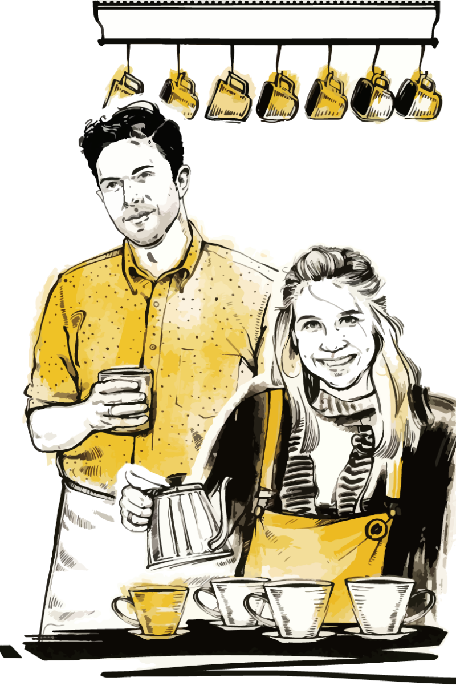

コーヒー関係の仕事をしている人に、どうしてコーヒーに惹きつけられたのか、そして魅了され続けているのはなぜかと聞くと、必ず大きな理由のひとつに「人」が出てきますマニアックかつ社交的で、楽しませることが好きな人が多いコーヒー業界。彼らが形成する緊密でグローバルなコミュニティでは、情熱の伝播が起きやすく、スペシャルティコーヒーの人気が高まるにつれて、コーヒー愛飲家の世界にはよりウェルカムな空気が広がっています魅力ある人柄やクリエイティブな考え方が業界全体に充満し、互いを刺激し合っているのですでは、どうしてコーヒーを淹れる仕事を続けるのはそんなに難しいのでしょうか?

ほとんどの場合、この問いはコーヒーショップの入門レベル、特にバリスタの仕事に関係しています。(地域によっては、入門レベルの仕事が皿洗いやカウンターの裏方ということもあるかもしれませんが、バリスタがすべてやっているところが多いです)バリスタは、最前線に立つ戦士であり、おもてなしをする大使であり、職人技を披露するエンターテイナでもあります彼らこそ、多くの人にとっては初めてとなる、美味しいコーヒーとの意義ある体験を演出する人たちなのです良質な(さらには至高の)コーヒーショップは世界中で急速に増え、多くの収益を上げていますしかし、コーヒー業界が成長し続けるには、ピラミッドの底辺であり労働力の大部分を占めるバリスタの仕事が、長続きしなしという事実について考える必要があるでしょう。